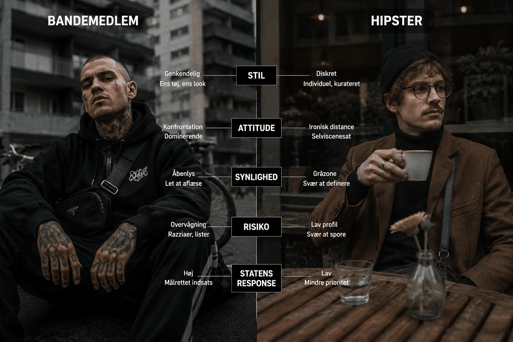
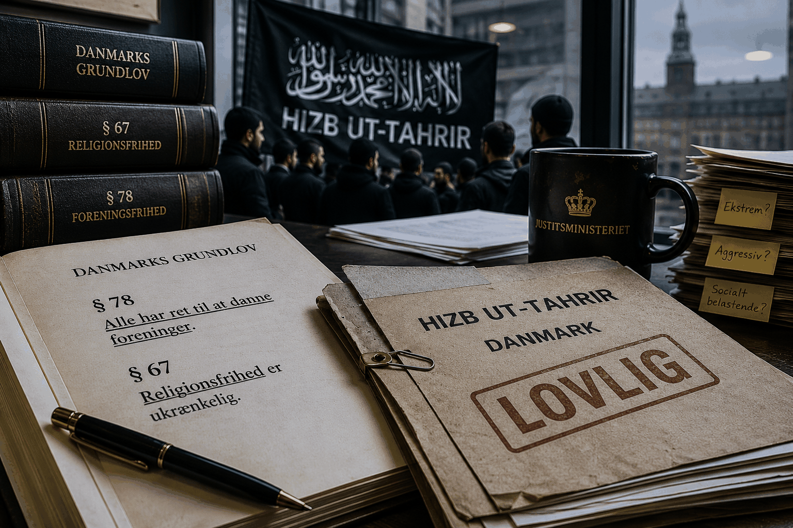

Banderne kan reddes: Den juridiske genvej, ingen taler om

En hipster er i teorien én der er foran resten af kulturen. En person der opdager ting før alle andre. Musik. Mode. Identiteter.
Men i det øjeblik nogen peger på dig og siger "han er hipster," er det slut. Nu er du blevet kategoriseret. Du er ikke længere foran udviklingen. Nu står du bare i kø til naturvin og fermenterede gulerødder med alle de andre.
Bander har præcis det samme problem.
Den klassiske bandeæstetik er blevet alt for let at aflæse. Samme tøj. Samme attitude. Samme hypermaskuline energi som en proteinshake med fængselsdom.
Og når staten kan genkende et mønster, begynder overvågningen. Visitationszoner. Razziaer. Lister.
Måske handler moderne organisering ikke om at blive farligere. Måske handler det om at blive sværere at kategorisere.
Hvis du samler 40 vrede mænd med ens jakker omkring fælles identitet, territorier og konfliktberedskab, kalder politiet det bandedannelse.
Hvis de samme mænd får CVR-nummer, vedtægter og et værdigrundlag om empowerment og udsatte unge, begynder kommunen at spørge, om de vil deltage i Kulturnatten.
Han siger det med samme rolige tone som en mand der forklarer skattefradrag på elbiler.
Grundlovens § 78 beskytter retten til at danne foreninger. Staten må ikke bare opløse grupper, fordi de virker ekstreme, aggressive eller socialt belastende. Problemet opstår først juridisk, når staten mener, at vold eller kriminalitet er en integreret del af organisationens funktion.
Og det er overraskende svært at bevise, hvis organisationen ser ud som en forening.
Det her er virkelig interessant.
Hizb ut-Tahrir er en islamistisk organisation, der åbent arbejder for at erstatte demokrati med et kalifat. Organisationen har gentagne gange spredt antisemitisk materiale. Alligevel er den stadig lovlig i Danmark - selvom andre europæiske lande har sagt NEJ TAK. Hvorfor?

Fordi religiøse foreninger har en juridisk dobbeltisolering. Grundlovens § 67 beskytter religionsfrihed. § 78 beskytter foreningsfrihed. Når begge aktiveres samtidig, opstår der en zone, hvor statens handlemuligheder er markant mere begrænsede.
En forening der kalder sig "Brødrene fra Blågårds Plads" og har til formål at "fremme fællesskab og brødres velfærd" kan opløses ved lov.
En forening der kalder sig "Brødrenes Islamiske Fællesskab" og har til formål at "fremme religiøs praksis og brødres åndelige velfærd" befinder sig i en helt anden juridisk virkelighed.
Der skal konkrete beviser til. Systematik. Proportionalitet. Strafbare handlinger. Og imens fortsætter organisationerne med at eksistere.
Forfatter Ayo Hansen beskriver i bogen "Når Tavshed Dræber," hvordan visse religiøse miljøer udadtil kæmper for demokratiske rettigheder, mens der internt kan eksistere social kontrol og ekstremisme. Det juridiske problem er, at disse to ting kan foregå samtidig uden at staten har redskaberne til at gribe ind.
Den Europæiske Menneskerettighedskonventions artikel 11 beskytter forsamlings- og foreningsfrihed i hele Europa. Hvis staten griber ind, så begynder hele maskinen at snurre.
Byret. Landsret. Højesteret. Mulige internationale instanser. År efter år.
Flere miljøer undersøger derfor nu aktivt, hvordan man bygger organisationer, der er juridisk irriterende at angribe. Find en dyr advokat, der har styr på proportionalitetsvurderinger, så står du stærkt!
Og her vender vi tilbage til hipsteren.
Den moderne camouflage er ikke mørkere tøj og dybere stemmer. Det er det modsatte. Mindre klassisk maskulinitet. Mere mode. Mere wellness. Mere kultur. Mere flydende stil.
Mindre "vi er en bande." Mere "vi er et emotionelt fællesskab med fokus på marginaliserede mænds mentale sundhed."
Det er svært at lave visitationszone omkring mænd der ligner grafiske designere fra Berlin og holder paneldebat om sårbarhed.
Jo mere samfundet lærer at genkende én type trussel, desto mere attraktivt bliver det at ligne noget andet.
Den moderne camouflage handler ikke om at skjule sig i mørket. Den handler om at ligne nogen, staten ville få dårlig samvittighed over at profilere.